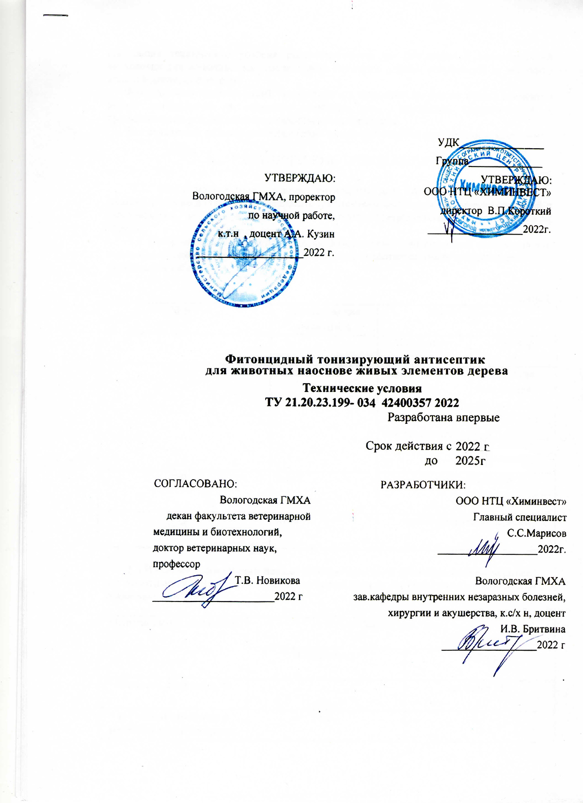
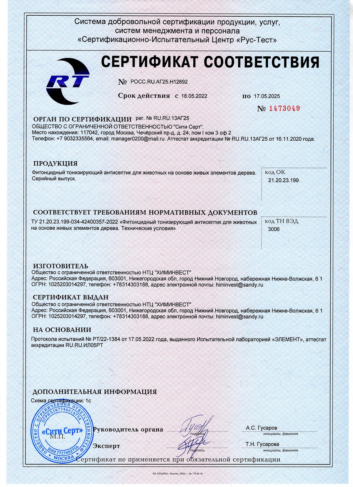

Фитонцидный тонизирующий антисептик для животноводства применяется для мелкого и крупного рогатого скота при обработки хирургических и травматических ран, инфекционных поражений копытец, открытых абцессов. Местное применение позволяет достигать высокого действия препарата.
из измельченной экструдированной древесной зелени, прошедшей процесс экстракции глюкогенной субстанцией. По внешнему виду представляет собой жидкий жировой продукт, содержащий в своем составе живые элементы дерева и вспомогательные вещества.
Перед применением препарата необходимо очистить обрабатываемую поверхность от гноя, раневого экстудата, некротизированных тканей. Удалить шерсть. Препарат распыляют в течение 2-3 секунд, над поврежденной зоной с расстояния 15-20 см. Дают впитаться в течение 5 минут, не позволяя животному слизать препарат. Длительность применения препарата зависит от вида раны и хода процесса заживления. В случаи глубоких и инфицированных ран сочетать лечение данным препаратом с комплексной терапией. Запрещено распылять вблизи открытого огня. Обработку животных проводят на открытом воздухе или проветриваемом помещении. Предотвращать попадания в глаза.
Фитонцидный тонизирующий антисептик выпускается в полимерной таре (по запросу потребителя). Способ хранения: в закрытой упаковке, в сухом защищенном от прямых солнечных лучей месте, вдали от нагревательных приборов, открытого огня, пищевых продуктов и кормов при t°C от 10-25°С. Срок годности - 18 месяцев. Изготовитель гарантирует соответствие фитонцидного тонизирующего антисептика требованиям настоящего стандарта (ТУ – 21.20.23.199-034 42400357 2022) при соблюдении условий хранения и транспортирования продукта.
пластиковая баночка, 400 г.
Доставка в течение 3-5 дней с полным комплектом сопроводительной документации(договор, счет, товарная накладная, наставление по применению, копия сертификата соответствия, паспорт на продукцию, рекламная информация).

Патент

Декларация о соответствии